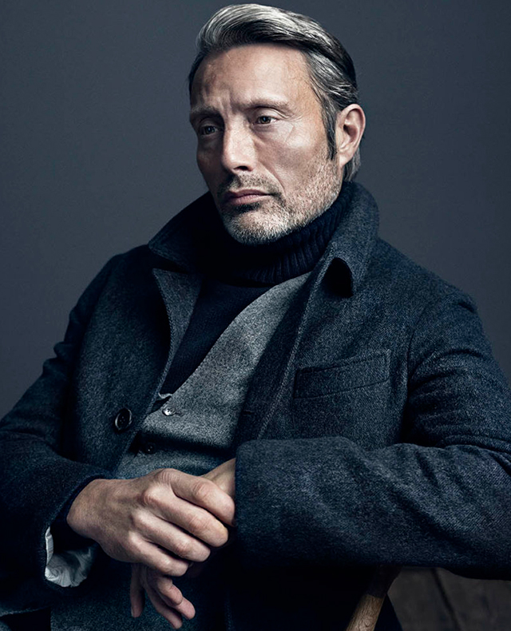

MENU
CONCEPT
Mads
SERGIY SHAPOVAL
2020
FILMOGRAPHY

1996 Blomsterfangen Max Jens Arentzen Short film
1996 Pusher Tonny Nicolas Winding Refn
1996 Café Hector Anders Lotte Svendsen Short film
1998 Vildspor Jimmy Simon Staho
1998 Nattens engel Ronnie Galway Shaky González
1999 Tom Merritt Elmer Karr Anders Gustafsson Short film
1999 Bleeder Lenny Nicolas Winding Refn
2000 Flickering Lights Arne Anders Thomas Jensen
2001 Monas verden Casper Jonas Elmer
2001 Monsters, Inc. Randall Boggs Pete Docter Danish dub
2001 Shake It All About Jacob Hella Joof
2002 I Am Dina Niels Ole Bornedal
2002 Open Hearts Niels Susanne Bier
2002 Wilbur Wants to Kill Himself Horst Lone Scherfig
2003 Nu Young Jakob Simon Staho Short film
2003 The Boy Below Far Morten Giese Short film
2003 The Green Butchers Svend Anders Thomas Jensen
2003 Torremolinos 73 Magnus Pablo Berger
2004 King Arthur Tristan Antoine Fuqua
2004 Pusher II Tonny Nicolas Winding Refn
2005 Adam's Apples Ivan Anders Thomas Jensen
2006 After the Wedding Jacob Petersen Susanne Bier
2006 Prague Christoffer Ole Christian Madsen
2006 Exit Thomas Skepphult Peter Lindmark
2006 Cars Chick Hicks John Lasseter Danish dub
2006 Casino Royale Le Chiffre Martin Campbell
2008 Flame & Citron Citronen Ole Christian Madsen
2009 Coco Chanel & Igor Stravinsky Igor Stravinsky Jan Kounen
2009 Valhalla Rising One-Eye Nicolas Winding Refn
2009 The Door David Andernach Anno Saul
2010 Clash of the Titans Draco Louis Leterrier
2010 Moomins and the Comet Chase Sniff Maria Lindberg Voice
2011 The Three Musketeers Rochefort Paul W. S. Anderson
2012 A Royal Affair Count Johann Friedrich Struensee Nikolaj Arcel
2012 The Hunt Lucas Thomas Vinterberg
2012 Move On Mark Asger Leth
2013 Charlie Countryman Nigel Fredrik Bond
2013 Michael Kohlhaas Michael Kohlhaas Arnaud des Pallières
2014 The Salvation Jon Jensen Kristian Levring
2015 Men & Chicken Elias Anders Thomas Jensen
2016 Doctor Strange Kaecilius Scott Derrickson
2016 Le Fantôme Le Fantôme Jake Scott Short film
2016 Rogue One: A Star Wars Story Galen Erso Gareth Edwards
2018 Arctic Overgård Joe Penna
2018 At Eternity's Gate The Priest Julian Schnabel
2019 Polar Duncan Vizla Jonas Åkerlund
2020 Another Round Martin Thomas Vinterberg
2020 Riders Of Justice Markus Anders Thomas Jensen Post-production
2021 Chaos Walking Mayor David Prentiss Doug Liman Post-production
2000–2004 Rejseholdet Allan Fisher 32 episodes
2005 Julie Harald 6 episodes
2005 Klovn Mads Episode: "Str. 44"
2013–2015 Hannibal Dr. Hannibal Lecter 39 episodes
2008 007: Quantum of Solace Le Chiffre Voice
2019 Death Stranding Clifford Unger Voice and motion capture